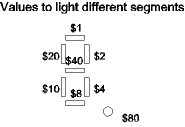

| Previous Section | Next Section | Index | Questions | Search the Text |
An array is a sequence of variable (RAM) data locations, which is named by it's first location. Elements of the array are accessed by a process called indexing. Arrays are used for tabular data which is collected and/or processed by the microcontroller. A table is an array which is in ROM memory, therefore values in a table cannot change. A table is used for values that can be calculated in advance and stored in the microcontroller memory for later access, for instance a table of sine function values can be much more easily looked up in a table than having to calculate sine values when needed. In the C programming language, we would declare an array of 10 unsigned byte values this way:
unsigned char a1[10];
While a table of 5 integers, 3, 5, 10, 153, and 210, would be declared:
const int t1[5] = {3, 5, 10, 153, 210};
Using the 68HC12 assembler, we use the ds (for arrays), db or dw (for tables) directive to allocate memory, and use a label to name the sequence. We place arrays in memory which will be RAM in the final system, and tables in memory which will be ROM in the final system, typically the same memory that holds the program:
org $1000 ; Start of RAM
... Various variable declarations
a1: ds 10 ; Array that is 10 bytes long
...
org $2000 ; Start of ROM
... Various code segments and tables
t1: dw 3,5,10,153,210 ; Table that is 5 words long
...
Arrays (in RAM or ROM) of characters are often referred to as strings. The assembler has a special directive to help define constant (ROM) strings:
s1: fcc /This is a string/ ; The First and last character in
; the operand, '/' acts as a delimiter
s2: db 'T','h','i','s',' ','i','s' ; The ugly alternative
db ' ','a',' ','s','t','r','i','n','g'
There are two common approaches to accessing tables and arrays. One is sequential, where each element is accessed in turn. The second is called random access, which is random in name only! For random access, the array index is specified, and the memory location corresponding to the index is calculated. Both of these approaches are implemented using an index register, and one of the indexed addressing modes.
For sequential access, the starting address of the array is loaded into an index register, then successive elements are accessed using the post-increment indexing mode. The following code segment will set every element of our byte array, a1, to the value 7:
ldx #a1 ; Load index register with address of array start
l1: movb #7 1,x+ ; Store 7 at current location, and go to next
cpx #a1+10 ; finished when address advances beyond end
bne l1
The first execution of movb will store the value 7 at location a1 (the address in X), then add 1 to X. So the value in register X is now a1+1. The contents of X is compared with the value a1+10, which is the address of the 10th byte past a1, the address of the first byte beyond the end of the array that starts at a1. Since this value isn't equal to X, the branch is taken, and the movb instruction stores the value 7 at location a1+1, then increments X to contain a1+2. The process continues until the 10th byte is stored, then X contains a1+10, and the branch is not taken.
The increment value must equal the size of the data in the array. We can also start at the end of the array and move toward the start by using post-decrement indexing. The following code segment will calculate the sum of the 5 integers in our table, starting with the last element:
ldx #t1+(4*2) ; Start at address of last word in table
ldd #0 ; Clear sum
l2: addd 2,-x ; Add word, then go to previous word address
cpx #t1 ; Stop when we go before start of table
bhs l1
Random access of an array is performed by first doing an address calculation. To access any arbitrary element of array a1, we must calculate the address of that byte. In computers, arrays typically are considered to have the first value at index 0, not 1 as is typical for mathematics. This saves a step in the calculations. The address of the ith element of an array with element size s bytes is A+i*s, where A is the address of the start of the array. To add the contents of a1[0] (square brackets represent the index operation) to a1[3], storing the sum in a1[5] we would execute:
ldaa a1
adda a1+3
staa a1+5
In these cases, the array index is constant. This allowed us to calculate the address of the array element in the assembler since the instruction operand, the effective address, is a constant value. It is important to realize that operands like a1+3 must be constant valued expressions and the addition doesn't take place when the instruction is executed but when the instruction is assembled.
Sometimes the array index is calculated at runtime, which means the array element address must be calculated at runtime as well. Let's consider evaluating the assignment b2 = t1[b1], where b1 is an unsigned byte variable, and b2 is a signed word variable. The table is a word table, so we need to multiply b1 by 2 and add to t1 to get the address of the table element. We can do the following:
ldx #t1 ; Get address of word table
ldab b1 ; Get index
aslb ; B contains index*2
movw b,x b2 ; Move word from t1[b1] to b2
It is important to note that, like the scalar values, neither the assembler nor the processor knows the structure of arrays -- number and size of elements. It is up to the programmer to not access array elements beyond the end and to calculate the addresses properly for word versus byte arrays. If the C language is used, the compiler will calculate the addresses correctly, but there is still no check for accessing elements beyond the boundaries of the array.
Finally let's look at generating a histogram. The histogram, H, has 16 bins, each representing the count of a range of 16 values. So H[0] is the count of values 0-15, H[1] is the count of values 16-31, and so on through H[15] which is the count of values 240-255. The H array will be an array of bytes. The data used to make the histogram will be in a second array of bytes, D, which will be 150 bytes long. The C language code segment to generate the histogram could be:
unsigned char *dp = D;
do {
H[*dp/16]++;
} while (++dp <= &D[149]);
Which is cryptic enough that a flow chart would be helpful:
Now we can write the algorithm in 68HC12 assembly language:
ldx #D ; address of start of D
ldy #H ; address of start of H
l1: ldaa 1,x+ ; Fetch next byte in D
lsra ; divide byte by 16
lsra ; by shifting right 4 times
lsra ; (Use logical shift since data
lsra ; is unsigned)
inc a,y ; Increment byte in H
cpx #D+149 ; Compare current data location
; to address of last byte
bls l1 ; repeat if not at end
Large tables consume large amounts of memory, which is often a precious resource in a microcontroller. We can save memory by using interpolation between table entries. For example, assume we want a table of sine values for angles from 0 to 90 degrees. A 91 byte table would work, however let's instead use a 10 byte table for angles of 0 to 90 degrees in steps of 10 degrees, with the intention of interpolating. We calculate the sine values:
| 0 | 0.0 |
| 10 | 0.17364817766693033 |
| 20 | 0.3420201433256687 |
| 30 | 0.49999999999999994 |
| 40 | 0.6427876096865393 |
| 50 | 0.766044443118978 |
| 60 | 0.8660254037844386 |
| 70 | 0.9396926207859083 |
| 80 | 0.984807753012208 |
| 90 | 1.0 |
We can't enter those decimal fractions in our table, so instead we will scale the values by storing the value times 255 in the table. We get the following table, shown as assembler code:
sine: db 0
db 44
db 87
db 127
db 163
db 195
db 220
db 239
db 251
db 255
If we were to access this table without using interpolation, we would want to execute the equivalent of the C expression sine[(angle+5)/10] to obtain the closest table entry. Using the assembler, we would have:
ldab angle ; calculate angle + 5
addb #5 ; value in range 5 to 95 (unsigned byte)
clra ; B -> D, zero extended
ldx #10 ; Divide by 10, puts quotient in X
idiv
ldaa sine,x ; Fetch byte from sine table
There are two instructions that do table lookup and linear interpolation, tbl and etbl. The former is used for byte tables and the latter for word tables, but the instructions work the same way. Both have a single operand which may be any single byte index mode that evaluates to the first of the two table entries used for the interpolation. When the instruction executes, the value in B is taken as a binary fraction (integer value divided by 256) of the proportional distance from the first table entry value toward the second. In other words, if B were 0, then the first table entry is used while if B were 255, the value would be interpolated at 255/256 the distance from the first to the second table entry. After execution, register A is set to the interpolated result. Consider the following code, which implements an interpolating version of the preceding code:
ldaa angle ; calculate angle*256/10
clrb ; D has angle * 256 (because angle
; is in high order byte)
ldx #10 ; Divide by 10
idiv ; Now X has angle*256/10
tfr x d ; A has integer part of angle/10,
; B has fractional part
ldx #sine
tbl a,x ; Fetch interpolated value into A
When we multiply the angle by 256 and divide by 10, we get a 16 bit value whose upper byte represents the angle/10 and is used as our table index. The lower byte represents the fractional part of dividing the angle by 10 and is used as the fraction argument for the tbl instruction.
This code was entered into a file, part009.asm, for testing. A value of 45 degrees ($2d) was given, and the program run. The calculated sine result was $b3. Since the values are scaled, this corresponds to $b3/255 or .702. The calculator shows the value of sine(45) to be .707, which is an error of less than 1%. However the non-interpolating code would give us the sine value of .765, or an error of over 7%.
You can run the simulator with this program from the link here. Set the angle in memory location $1000, then run the program at $2000. When execution stops, the sine result Zwill be in location $1001.
Tables are useful for data that don't represent functions. Consider the case of driving a seven-segment LED display with decimal digit patterns for "0" through "9". A display value of $5B ($40+$10+$8+$2+$1) would display the digit "2". A display value of $3F ($20+$10+$8+$4+$2+$1) would display the digit "0". All digits can be displayed by using the correct pattern.
An integer value in the range of 0 through 9 is in accumulator A, and it is necessary to calculate the value to send to the LED display and place it in accumulator B. We could use a decision tree, ladder style:
cmpa #0
bne not0
ldab #$3F
bra done
not0: cmpa #1
bne not1
ldab #$6
bra done
not1:
...
done:
This would be tedious to write, slow to execute (12 instructions executed on average), and take a great deal of ROM memory (80 bytes). It makes more sense to use a table of display values which is indexed by the digit value. The table would be:
cvt: db $3f,$06,$5b,$4f,$66,$6d,$7d,$07,$7f,$6f ; 0, 1, 2, 3, 4, 5, 6, 7 8, 9
which takes 10 bytes. It takes two instructions to do the table look-up:
ldx #cvt ; X gets address of start of table
ldab a,x ; Effective address is sum of
; contents of registers A and X
An alternative code sequence that has the same result (assuming A is non-negative, which it is supposed to be):
tfr a x
ldab cvt,x ; Effective address is cvt plus contents of X (=A)
A full example of driving LED displays appears later in this text in the section Time Multiplexed Displays.
Continue with Decision Trees and Logic Instructions.
Return to the Index.